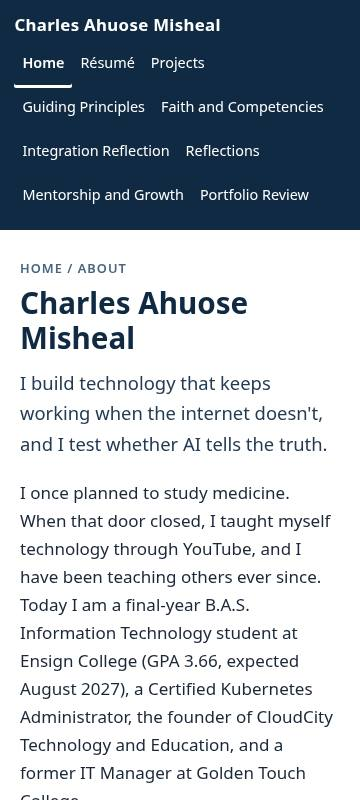
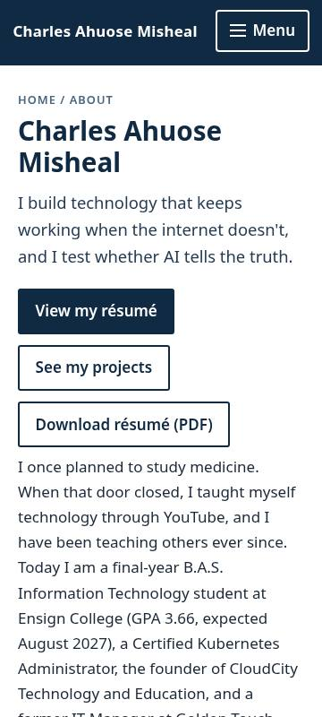
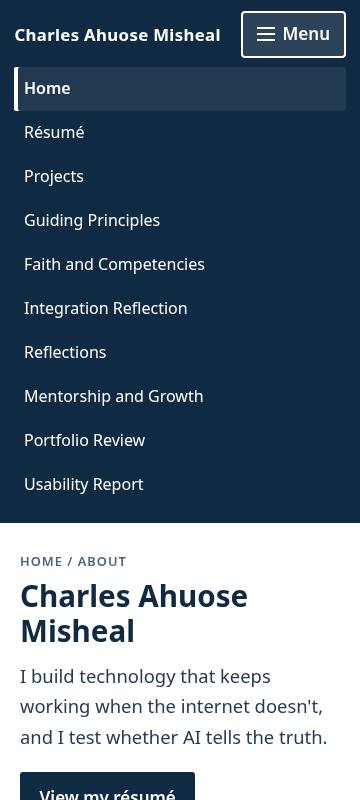

Professional Growth Portfolio · IT 497 Week 5
Usability Report
How I tested this portfolio for usability and accessibility, what I found, what I changed, and what the changes achieved, with before and after measurements.
Purpose and scope
A portfolio only serves its readers if they can find what they need quickly, on any device, and with any ability. I reviewed all 9 pages of the site as they were published at the end of Week 5, fixed the problems I found, and then repeated every test on the updated site, which now has 10 pages including this report.
Method and tools
This round of testing was an expert review that I carried out myself, supported by automated tools. I did not run sessions with other participants this week; that is the first item in my remaining recommendations. I ran the same tests before and after the changes, on a local copy of the site that matched the live version.
- Heuristic review: I walked through each page using Nielsen's (1994) ten usability heuristics, such as visibility of system status, user control and freedom, and aesthetic and minimalist design.
- Task scenarios: seven common tasks, measured by taps or clicks and by how far a reader must scroll on a 360-pixel phone screen.
- Lighthouse 13.5: performance, accessibility, best practices, and SEO for every page in both mobile and desktop modes (Google, n.d.).
- axe-core: automated accessibility checks against WCAG 2.1 A and AA rules and best practices, at 360 and 1,280 pixels wide (Deque Systems, n.d.).
- html-validate: HTML markup validation for every page.
- Link check: every internal link and page anchor, plus every external link.
- Keyboard check: tabbing through each page to confirm the skip link works, every focused element shows a visible outline, and the tab order is logical.
- Responsive check: screenshots at 360, 768, and 1,280 pixels wide, and a check for sideways scrolling.
- Standards: findings were rated against the Web Content Accessibility Guidelines (WCAG) 2.2 (World Wide Web Consortium [W3C], 2024).
Severity ratings: High means a barrier that fails a WCAG requirement or blocks a task; Medium means a task is noticeably slower or harder; Low means a minor issue or polish.
What the baseline showed
The site started from a strong technical base. Every page scored 100 for Lighthouse performance and SEO, color contrast passed on every page, html-validate found no errors, there were no broken internal links, and no page scrolled sideways at any width. The problems were mostly about finding things: a tall menu on phones, very long pages with no way to jump around, and important content buried deep in a page.
| ID | Finding | Evidence | Severity | Principle |
|---|---|---|---|---|
| U1 | A table on the Integration Reflection page could scroll sideways on phones but could not be reached with a keyboard. | axe "scrollable-region-focusable" (serious) at 360 px | High | WCAG 2.1.1 Keyboard |
| U2 | On phones, the menu filled 230 pixels at the top of every page, almost a third of the screen, before any content appeared. | Header 230 px tall on a 360 × 800 screen; ten links wrapped onto four rows | Medium | Aesthetic and minimalist design |
| U3 | Long pages had no way to jump to a section or back to the top. | At 360 px: Review 14,917 px, Integration 13,552 px, Projects 12,542 px tall; 0 back-to-top links | Medium | User control and freedom |
| U4 | Each project's ethics section was buried inside a long article. | Metasploit ethics heading 2,594 px below the project's start at 360 px (about 3.5 screens) | Medium | Recognition rather than recall; efficiency |
| U5 | My 4.2 video reflection was only on YouTube, so the portfolio had no video and visitors had to leave the site to watch it. | 0 embedded videos | Medium | Match between system and real world |
| U6 | The Home page's résumé PDF link was far down the page on phones. | 2,041 px from the top at 360 px (about 2.8 screens) | Low | Flexibility and efficiency of use |
| U7 | A heading level was skipped on the Integration Reflection page (h1 to h3), which confuses screen reader navigation. | axe "heading-order"; Lighthouse accessibility 98 on that page | Low | WCAG 1.3.1 Info and Relationships |
| U8 | Readers could not tell which part of the portfolio a page belonged to, and the footer had no site links. | No breadcrumb; footer had 0 navigation links | Low | Visibility of system status |
| U9 | No favicon, which caused a 404 error in the browser console on every page. | Lighthouse best practices 96 on all pages ("errors-in-console") | Low | Consistency and standards |
| U10 | Keyboard users on phones had to pass 11 links before reaching content if they did not use the skip link. | 11 tab stops before the main content | Low | WCAG 2.4.1 Bypass Blocks (skip link already passed) |
Task scenarios
I measured seven tasks on a 360-pixel phone screen, starting from the Home page. One screen is about 740 pixels of scrolling.
| Task | Before | After |
|---|---|---|
| T1. Download the résumé PDF | 1 tap, after scrolling about 2.8 screens | 1 tap on a button in the first screen (448 px from the top), or from the footer on any page |
| T2. Read the Metasploit project's ethics section | 2 taps (Projects, then the project link), then scroll about 3.5 screens | 3 taps (Projects, the project link, "Ethical considerations"), with no long scrolling |
| T3. Reach Faith and Competencies | 1 tap, but the menu filled 230 px of every screen | 2 taps (Menu, then the link) with a 73 px header, or 1 tap from the footer |
| T4. Return to the menu from the bottom of the Review page | Scroll back up 14,917 px (about 20.2 screens) | 1 tap on "Back to top," or use the footer links directly |
| T5. Watch my 4.2 video reflection | Not possible on the site | Plays on the Home page, with a YouTube link and a text version of the script |
| T6. Skip to the main content with a keyboard | Skip link worked on 9 of 9 pages | Skip link works on 10 of 10 pages; 3 tab stops before content on a phone instead of 11 |
| T7. Know where I am in the portfolio | Only the small label above each page title | A breadcrumb on every page except Home, an "On this page" list on long pages, and the current page marked in the menu |
One change is a trade-off. On phones, reaching a page from the top menu now takes one extra tap, because the menu opens from a button. I accepted that because the header shrank from 230 to 73 pixels on every page, and the footer now gives one-tap access to every page from the bottom of the screen.
Enhancements implemented
Navigation
- A "Menu" button on phones that opens and closes the menu, reports its state to screen readers with
aria-expanded, and closes with the Escape key. Without JavaScript, the full menu still shows (U2, U10). - A breadcrumb trail on every page except Home, showing whether a page belongs to the Professional Portfolio or the Spiritual Progression Portfolio (U8).
- "On this page" lists on the six longest text pages (U3).
- "Jump to" links at the top of each project for its ethical considerations and faith in practice sections (U4).
- A footer menu that groups every page into the two portfolios, plus a "Back to top" link on every page (U3, U8).
- Moved the Home page buttons directly under the opening line and added a "Download résumé (PDF)" button (U6).
- Tightened menu spacing on tablets so the ten menu links still fit on two rows.
- The new Usability Report page in the menu, the footer, and the breadcrumbs.
Multimedia
- My 4.2 video reflection on the Home page. A preview image with alt text loads first, and YouTube's privacy-enhanced player (youtube-nocookie.com) loads only when a visitor presses play, so the page makes no requests to YouTube until then. The player has a descriptive title and a 16:9 frame that resizes on every screen. A direct YouTube link and an expandable text version of the script are included (U5).
- A new entry for the video on the Reflections page.
- Before and after screenshots on this page, each with alt text.
- A simple site icon (favicon) in the portfolio's navy color (U9).
Accessibility
- Scrollable tables can now be focused and scrolled with a keyboard, and each one is labeled with its caption (U1).
- Corrected the heading order on the Integration Reflection page by adding a "Mind map" heading (U7).
- Stronger white focus outlines on the navy header and footer, and visible focus on the video frame and the script toggle.
- Section links now stop just below the top edge, so headings are not cut off when a reader jumps to them.
- Every touch target in the menus stays at least 44 pixels tall.
Responsiveness and metadata
- Checked every page at 360, 768, and 1,280 pixels; none scroll sideways.
- Added a theme color and Open Graph title, description, and link to every page, so shared links show a clear preview.
- Print styles hide the new navigation elements, so the résumé still prints cleanly.
Before and after results
| Category | Before (9 pages) | After (10 pages) |
|---|---|---|
| Performance (mobile) | 100 (lowest 100) | 100 (lowest 100) |
| Performance (desktop) | 100 (lowest 100) | 100 (lowest 100) |
| Accessibility (mobile) | 99.8 (lowest 98) | 100 (lowest 100) |
| Accessibility (desktop) | 99.8 (lowest 98) | 100 (lowest 100) |
| Best Practices (mobile) | 96 (lowest 96) | 100 (lowest 100) |
| Best Practices (desktop) | 96 (lowest 96) | 100 (lowest 100) |
| SEO (mobile) | 100 (lowest 100) | 100 (lowest 100) |
| SEO (desktop) | 100 (lowest 100) | 100 (lowest 100) |
| Check | Before | After |
|---|---|---|
| axe-core violations (all pages, 360 and 1,280 px) | 3 | 0 |
| Pages with Lighthouse accessibility of 100 (mobile) | 8 of 9 | 10 of 10 |
| Pages with Lighthouse best practices of 100 (mobile) | 0 of 9 | 10 of 10 |
| Skipped heading levels | 1 | 0 |
| html-validate errors | 0 | 0 |
| Broken internal links or anchors | 0 | 0 |
| External links responding | 21 of 21 | 22 of 22 |
| Focused elements without a visible outline | 0 | 0 |
| Pages that scroll sideways (360, 768, 1,280 px) | 0 | 0 |
| Header height on a 360 px phone | 230 px | 73 px |
| Tab stops before main content on a phone | 11 | 3 |
| Back-to-top links on the Projects page | 0 | 1 |
| Ethics jump links on the Projects page | 0 | 4 |
| Embedded videos | 0 | 1 |



Impact
- More content, sooner. On a phone, the header now takes 73 pixels instead of 230, so readers see the page title and introduction right away on every page.
- Less scrolling to key content. A project's ethics section is now one tap away instead of up to 3.5 screens of scrolling, and the résumé PDF is in the first screen of the Home page.
- No dead ends. Every page now ends with a full site menu and a way back to the top, which matters most on the longest pages, up to 14,917 pixels on a phone.
- Fully keyboard accessible. Automated accessibility violations went from 3 to 0, and every page now scores 100 or higher for Lighthouse accessibility.
- Richer content. The portfolio now includes my video reflection, so visitors can hear me explain my growth in my own voice without leaving the site.
This work also connects to my principle of Ministering to the One. A visitor using a screen reader, a keyboard, or an older phone on a slow connection deserves the same experience as anyone else. Testing for that reader is part of serving them.
Remaining recommendations
- Test with real people. Ask three to five people, including at least one who uses a phone as their main device, to complete tasks T1 to T5 while thinking aloud, and fix the points where they hesitate. Nielsen (2000) found that small groups of testers reveal most usability problems.
- Check the video captions. Confirm that the YouTube captions for my video are accurate, and correct them in YouTube Studio if needed.
- Add a social preview image. Create a simple preview image for shared links when I have a professional photo or graphic to use.
- Repeat the tests each block. Run the same Lighthouse, axe, link, and keyboard checks whenever I add a page, so new content keeps the same standard.
References
- Deque Systems. (n.d.). axe-core [Computer software]. GitHub. https://github.com/dequelabs/axe-core
- Google. (n.d.). Lighthouse [Computer software]. Chrome for Developers. https://developer.chrome.com/docs/lighthouse/overview
- Nielsen, J. (1994, April 24). 10 usability heuristics for user interface design. Nielsen Norman Group. https://www.nngroup.com/articles/ten-usability-heuristics/
- Nielsen, J. (2000, March 18). Why you only need to test with 5 users. Nielsen Norman Group. https://www.nngroup.com/articles/why-you-only-need-to-test-with-5-users/
- World Wide Web Consortium. (2024, December 12). Web content accessibility guidelines (WCAG) 2.2. https://www.w3.org/TR/WCAG22/